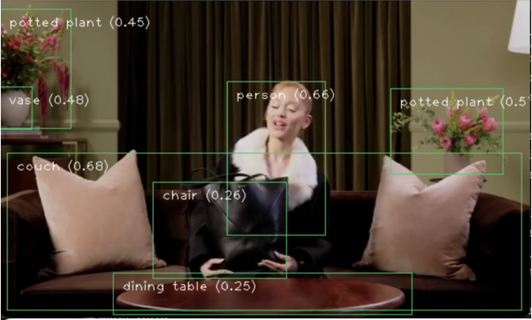

關於我
林宜樺
臺灣科技大學企管系
競賽：
2024第十二屆海峽兩岸旅遊觀光研討會 佳作發表人
2024臺灣科技大學企管系實務專題 第一名
語言能力：
多益905分 金色證書
海外交換：
SPRING SEMESTER 2024 AT IÉSEG SCHOOL OF MANAGEMENT
專題研究：
沉浸式科技體驗對消費者旅遊意圖之影響—以2024臺北燈節為例
職業經歷
行銷企劃助理
叡亞環保技術股份有限公司 2022.04-2023.11
負責行銷與品牌推廣:
1. 經營社群媒體，提高品牌曝光度
2. 撰寫新聞稿，傳遞企業價值與市場動態
3. 拍攝宣傳影片，提升視覺行銷效果
4. 銷售傳單與型錄設計規劃
5. 參與WELL健康建築認證推廣，接觸國際ESG趨勢

行銷助理
高徠數碼科技股份有限公司 2021.09-2022.11
1. 經營社群媒體，吸引目標受眾，提高品牌曝光度
2. 行銷策略和活動發想

作品集
PoseMate
智慧虛擬私人瑜伽 / 舞蹈教練系統
1. 動作即時偵測：透過鏡頭擷取人體關節關鍵點
2. 標準姿勢比對：評估使用者與專業教練示範的動作差異
3. 即時錯誤提示：用視覺或語音指出錯誤部位以及視覺化簡易示範
4. 動作分析報告：課後生成學習評估，追蹤改善情形
查看介紹影片
MediaPipe物件辨識
- 偵測影像或影片中的多樣物件是否存在，以及它們的位置
- 透過機器學習處理影像或串流影片資料，輸出一系列的偵測指數

MediaPipe姿勢偵測
- 偵測影像或影片中的人體關節點，並進行姿勢分析
- 加入關節點角度公式，計算肢體彎曲次數
Teachable Machine模型訓練
- 訓練模型，偵測鏡頭中的物體，並計算機率
- 加入人體手勢訓練，給定手勢代表含義
DALLE影像生成
- 利用openAI影像生成平台生成及操作影像
Gemma3多模態LLM應用
- 結合了語言理解與視覺處理能力，廣泛應用於跨模態任務中。例如圖片生成敘述、多模態問答
- 藉由整合文字與圖像的輸入處理能力，提供更精準的情境理解與互動回應
聯絡方式
電話: 0905-151-402
E-mail: audreylin67@gmail.com